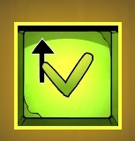

Téléchargement des ressources...
Téléchargement des ressources...
Ils étaient là.
À moins de cent mètres derrière Simon. Bien décidés à lui faire payer l’affront qu’ils avaient subi.
La Meute.
Quatre adolescents qui faisaient régner leur loi au sein du foyer.
Recroquevillé dans la pénombre d’un porche, Simon contemplait le ballet des lampes torches qui déchiraient la nuit. Des yeux, scrutant le moindre recoin, repoussant les ténèbres de leurs lueurs cyclopes.
Bientôt, ils seraient sur lui.
Tu peux lire plus rapidement, revenir en arrière ou faire une pause
Accelerer
Retour en arrière
Mettre le souris dessus ou cliquer pour faire une pause
Le sac clignote !
Vite clique dessus et capture l'image avec l'appareil photo
Simon frissonna en songeant à ce qui allait lui arriver. Il savait que Kevin, leur chef, serait sans pitié…
Il fallait qu’il leur échappe.
Absolument. Et tant pis s’il ne pouvait jamais retourner au foyer.
Les pas se rapprochaient, de plus en plus. Il pouvait entendre leurs voix à présent.
 Trouvez-moi ce sale petit rat ! Il va comprendre qu’on ne peut pas se moquer de nous comme ça !
Trouvez-moi ce sale petit rat ! Il va comprendre qu’on ne peut pas se moquer de nous comme ça !
 Ouaip, on va lui faire sa fête !
Ouaip, on va lui faire sa fête !
Ça, c’était « La Fouine ».
Dix sept ans, un mètre quatre-vingt, soixante-quinze kilos de violence pure. Une véritable bombe ambulante qui ne demandait qu’à exploser.
Simon se pencha un instant hors de son abri pour évaluer ses chances de leur échapper.
Proches du zéro absolu s’il ne bougeait pas de sa cachette. Un peu plus s’il tentait une sortie. À condition de tomber sur quelqu’un, un adulte qui saurait éloigner ses poursuivants.
 Tu es prêt ? chuchota-t-il à Dark.
Tu es prêt ? chuchota-t-il à Dark.
Dark. Vador. Son rat albinos. Son plus fidèle compagnon depuis un an.
Le seul en vérité.
Simon repoussa l’élan de mélancolie qui menaçait de le submerger et enfouit Dark au fond de son sac.
Il passa les lanières autour de ses épaules et s’élança.
Pas de réaction.
Il s’était mis à courir comme si sa vie en dépendait.
Si la Meute lui tombait dessus, il était bon pour un passage à tabac dans les règles de l’art. Voilà ce qui se passe lorsque l’on refuse de se soumettre aux plus forts.
Simon évitait de regarder dans leur direction, les yeux rivés sur les frondaisons du parc Montsouris.
Des arbres, de la pénombre et des milliards de recoins où il pourrait se dissimuler en attendant l’aube.
S’il atteignait le jardin, il serait sauvé.
Mais, dans sa précipitation, il buta contre le trottoir. Le béton lui arracha une plainte. Un cri minuscule.
Il se figea.
La Meute l’avait sans doute entendu. Ils allaient le localiser, lui tomber dessus.
L’adolescent retint son souffle.
Pour l’instant, les poursuivants s’étaient éloignés, occupés à fouiller une impasse encombrée de poubelles.
Simon se redressa lentement sur les coudes. Plus qu’une dizaine de mètres et il serait à l’abri.
Il s’accroupit, prêt à s’élancer de nouveau. D’une main rassurante, il caressa le poil hérissé de Dark.
T’inquiètes, on est presque en sécu…
Un bras puissant s’enroula soudain autour de sa poitrine, bloquant ses paroles au fond de sa gorge. Un bras noir de crasse, surgi de l’amas de carton comme un monstrueux tentacule.
Tu fais trop de bruit, petit, gronda le tas d’emballages ramollis par la pluie.
Simon, terrifié, respirait à peine.
Si tu veux leur échapper, il va falloir me faire confiance, reprit la voix.
Joue pour te calmer et écouter cet inquiétant personnage
Appuie sur la flèche ou de ton clavier lorsque le contour jaune touche le pavé dans le jeu.
Réussi
Raté
Si tu réussis, Simon discutera avec le SDF. Si tu rates cinq fois, Simon continuera à courir.
Bravo! Tu as réussi à te calmer, tu vas écouter et gagner de précieuses minutes sur tes poursuivants.
« Respirer. Lentement. Inspirer par le nez. » s’exhortait Simon pour retrouver son calme.
C’est bien petit, continue comme ça et je vais pouvoir te lâcher.
La voix avait quelque chose de rassurant, d’hypnotique. Les accents d’un conteur au coin d’un feu de bois. Et malgré sa frayeur, Simon s’apaisait peu à peu.
Bientôt l’étreinte se relâcha et l’adolescent put se retourner.
Deux yeux, minuscules, enfoncés dans un visage bonhomme mangé par une barbe jaunie de nicotine le fixaient avec bienveillance.
Alors petit, on dirait que tu es dans le pétrin ?
Je… Oui, monsieur.
Monsieur ? ricana l’homme. Il y a bien longtemps que l’on ne m’a pas donné du monsieur ! Appelle moi Diogène, comme tout le monde.
Diogène ? s’étonna Simon tout en songeant qu’effectivement le vieillard ressemblait au célèbre philosophe.
On ne choisit pas sa place au soleil ! répondit l’homme avec emphase. Mais trêve de civilités, il me semble que les autres ne vont pas tarder à venir par ici et j’ai bien l’impression qu’ils vont te faire passer un sale quart d’heure, non ?
Simon baissa les yeux.
Alors écoute-moi : je vais tâcher de les retenir un peu pendant que tu vas te cacher dans le parc.
Mais… Pourquoi ?
Ne cherche pas… Disons que je veille à rétablir l’équilibre : ils ont l’avantage du nombre, tu auras celui du temps…
Mer…
Pas de ça entre nous ! tonna Diogène en lui tendant une grosse main dévorée de poils noirs. Un jour tu auras l’occasion de me rendre la pareille, j’en suis sûr.
Simon haussa les épaules sans comprendre puis il se glissa en silence vers les frondaisons.
Il avait presqu’atteint les premiers bosquets lorsqu’il entendit la voix du vieil homme haranguer la Meute.
« J’espère qu’ils ne lui feront pas de mal… »
Progressant avec prudence, Simon s’enfonça dans les entrailles de Montsouris.
Le silence était retombé.
« Avec un peu de chance, ils ont abandonné. » Pensa-t-il sans vraiment y croire.
Il progressait en direction du lac, se coulant dans les ombres du parc. Scrutant l’obscurité, il cherchait un endroit pour se cacher, attendre l’aube en toute sécurité.
Soudain…
Grâce à toi Simon dispose de quelques précieuses secondes d’avance sur ses poursuivants.
Dommage, tu n'as pas réussi à te calmer, tu vas t'échapper et continuer à courir.
« Faire confiance ? » songea Simon.
Comment faire confiance à un inconnu surgi d’un amas de cartons au beau milieu de la nuit ?
En revanche, s’il restait là, il risquait de se faire capturer.
Malgré la peur qui paralysait ses muscles, Simon n’avait qu’une idée en tête : s’échapper.
Il s’efforça de se calmer.
Que me voulez-vous ? parvint-il à articuler.
T’inquiètes petit, Diogène est là pour t’aider !
Mais l’haleine avinée de l’homme, ses accents rocailleux ne faisaient que renforcer la détermination de Simon. Et, tandis que l’étreinte se relâchait un peu, l’adolescent ramena ses genoux sous ses fesses.
Arrête de remuer, tonna l’homme, tu vas nous faire repérer.
Dark, à toi !
Avant que son adversaire ne comprenne ce qui se passe, le rat lui avait mordu la main.
L’homme poussa un cri et Simon bondit.
Nom d’un rat d’égout ! rugit la voix derrière lui.
Mais Simon ne se retourna pas, courant vers le parc.
A peine était-il sorti de la pénombre que le halo d’une torche le surprit.
Il est là !
La Meute était de nouveau sur ses talons…
Simon détala tandis que les faisceaux accrochaient sa silhouette.
Chopez-le ! Faut qu’il comprenne !
Que je comprenne quoi ? Qu’il faut se laisser faire ? Pas question !
Il accéléra.
Il essayait d’oublier que ses poumons le brûlaient, qu’il était épuisé par cette poursuite qui durait depuis des heures, et surtout que la peur menaçait de le paralyser à tout instant.
Il traversa le boulevard, déclenchant le klaxon furieux d’un noctambule égaré.
Puis il s’engouffra à l’abri des arbres. Son sac ballotait sur ses épaules et il pensa au pauvre Dark.
Sans réfléchir, il pénétra dans une petite allée. Il dépassa les angles du pavillon météo qui s’élevait dans la pénombre, puis il ralentit sa course.
Pas un bruit.
Rien d’autre que le vent dans les feuilles.
Où étaient-ils passés ?
Simon s’arrêta, s’accroupit derrière un banc scarifié de graffitis.
Là ! Sur sa gauche.
Il avait reconnu la démarche chaloupée de la Fouine, les pas lourds de l’Ours – seize ans, un QI inversement proportionnel à sa force - à ses côtés.
Les deux autres suivaient la ligne de tramway qui longeait le parc, sur sa droite.
Le groupe s’était séparé en deux et tentait de l’encercler.
Simon réfléchit à toute allure.
Le RER !
La station ne devait être qu’à quelques dizaines de mètres devant lui et, même en ces heures tardives, il y aurait sans doute un peu de monde.
Il reprit sa progression, lentement, veillant à rester invisible.
Plus que cinquante mètres.
Il entendait déjà le crissement des rames sur les rails.
Quarante
Là sur le pont ! Il essaye de rejoindre la gare !
Merde ! lâcha Simon en reprenant sa course.
Trente.
Mais la Meute, galvanisée par la proximité de sa proie, se rapprochait rapidement.
Ils avaient de la lumière, ils évitaient les obstacles. Surtout ils étaient plus âgés, plus forts.
Simon était éreinté, les jambes écorchées par les ronces, au bord de l’asphyxie.
Les deux groupes gagnaient insensiblement du terrain. Bientôt ils se rejoindraient et ce serait l’hallali.
Simon obliqua brutalement vers le nord pour essayer de rejoindre un bouquet d’arbres denses. Avec un peu de chance, il pourrait les semer. Au pire, il grimperait sur l’un des troncs centenaires.
Il se précipita dans le bosquet. Les branches basses fouettèrent son visage, lui arrachant des larmes.
Mais il était en sécurité : l’obscurité était totale.
Il hésita : qu’allait-il faire à présent ?
Simon balaya les ténèbres en plissant les paupières. Mais les ombres s’étaient refermées, formant un mur d’une noirceur impénétrable.
« Tant pis » murmura-t-il en reprenant sa course.
Les bras protégeant son visage, il accélérait toujours plus, tentant de semer les éclats de voix de ses poursuivants. Il les entendait se rapprocher. Autour de lui, noyés dans l’obscurité.
Ils ne m’auront pas… Ils ne m’auront…
Soudain, il s’effondra, le souffle coupé, une violente douleur barrant sa poitrine. Il venait de heurter quelque chose de plein fouet.
Abasourdi, Simon fouilla l’obscurité. Il entendait ses poursuivants battre les talus et les fourrés.
Il tâtonna un instant dans son sac.
Sa torche.
Un faible halo de lumière.
Un grillage.
Piégé !!!
Il se redressa en grimaçant. S’approcha. Une dizaine de mètres en contrebas, le faisceau de sa lampe illumina les reliefs mangés de rouille d’une ligne de chemin de fer abandonnée.
La Petite Ceinture.
Simon arrêta son choix sur un vieux chêne. Il n’en pouvait plus de fuir. Depuis qu’il s’était échappé du foyer, il n’avait cessé de courir et ses muscles lui faisaient de plus en plus mal.
Il prit son élan et se hissa dans le feuillage touffu.
Les paumes écorchées, le souffle court, il s’adossa enfin contre le tronc rugueux en poussant un soupir…
Juste à temps.
Deux mètres plus bas, en dessous de lui, la silhouette de la Fouine venait de faire son apparition précédée de l’œil scrutateur de sa lampe.
Seul.
Il se figea au pied du chêne, étudiant avec attention le sol.
Je sais que tu es là… Quelque part, terré comme une fillette…
Simon se recroquevilla un peu plus.
Allez, viens. Je ne te ferai pas de mal… Pas tout de suite… poursuivit la brute tout en élevant brusquement le faisceau de sa torche.
Simon sursauta, aveuglé par la lumière crue.
Je t’ai trouvé ! fanfaronna la Fouine.
Simon était pétrifié de terreur. Dans quelques secondes, le reste de la Meute serait là et tout serait fini. Kevin ne lui pardonnerait pas de lui avoir résisté.
Il fallait tenter quelque chose. Quelque chose de si inattendu, de si surprenant que la Fouine ne pourrait rien tenter pour le retenir.
Descends tout de suite ! hurla la brute.
Et soudain, Simon sut ce qu’il allait faire.
J’arrive… Mais, j’ai… Un peu peur…
La Fouine ricana.
C’est bon, j’ai compris. Inutile de couiner, je viens t’aider.
Simon regarda l’adolescent s’avancer.
Plus que quelques centimètres, pensa-t-il. Maintenant !
Et il s’élança, atterrissant sur le dos de son poursuivant.
La Fouine émit un petit cri puis s’effondra, sonné, tandis que Simon reprenait sa fuite.
Il entendit les autres qui hurlaient dans la nuit et accéléra encore.
Dans sa précipitation, il faillit ne pas voir le grillage qui lui barrait la route.
Il stoppa sa course et tâtonna un instant dans son sac.
Sa torche.
Il actionna l’interrupteur.
Une dizaine de mètres en contrebas, le faisceau de sa lampe illumina les reliefs mangés de rouille d’une ligne de chemin de fer abandonnée.
La Petite Ceinture.
Un éclat de voix derrière lui le fit sursauter.
On le tient !
Simon fixa le puits de ténèbres qui s’étendait au-delà du grillage.
Alors, t’es enfin prêt à recevoir ta leçon ?
Kevin s’approcha dans la clarté de la lune.
Il tendit le bras. Un bruit de ressort. Une lame apparut au bout de sa main.
Simon sentait le sang battre contre ses tempes, l’adrénaline inonder son corps. Il voulait gagner du temps pour récupérer. Pour tenter quelque chose.
Il se retourna face à ses adversaires.
Je n’ai fait que défendre Rachel. Vous n’aviez pas le droit de vous en prendre à elle.
T’avais qu’à pas te mêler de nos affaires.
Quatre contre un, vous n’êtes que des lâches !
Simon avait lancé ça tout en jetant un bref coup d’œil autour de lui. Il avait aperçu la grosse pierre au pied du grillage. Un bon tremplin…
Kevin fulminait.
Amenez-le moi !.
Les trois autres s’élancèrent. Mais, juste avant que leurs mains ne se referment sur lui, il s’était jeté sur le côté. D’une roulade il avait atteint la pierre. Il se redressa d’un bond, prit appui sur le rocher et entreprit l’escalade du grillage.
Il va s’échapper ! Faites quelque chose !
Mais… Il ne peut pas aller loin, il n’y a rien après.
C’était vrai.
Il n’y avait plus rien. Rien d’autre qu’un énorme trou de ténèbres.
Mais il était trop tard pour reculer.
Simon s’élança dans le vide.
A bout de souffle, Simon vit la Meute se précipiter sur lui. La fouine le contemplait de son regard chafouin tandis que les autres convergeaient dans sa direction. Dans quelques secondes, c'était sûr, Simon devrait se préparer à affronter Kevin.
A SUIVRE...
Simon a du s’échapper de son foyer sous la menace d’une bande qui se fait appeler la Meute. Il s’est enfui à travers les rues de Paris pour se retrouver pris au piège dans le Parc Montsouris…